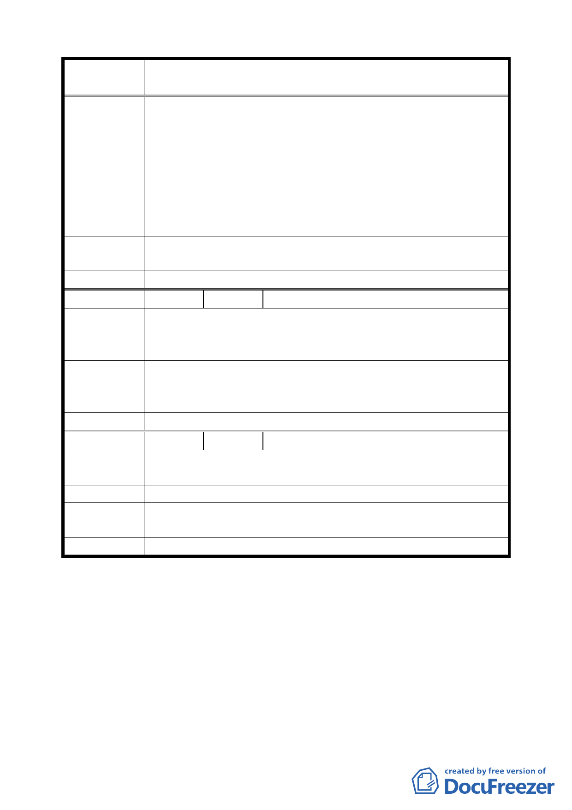

案 名 變更臺北市中正區齊東街附近住宅區為保存區及日式宿舍風
貌保存特定專用區主要計畫案
一、 不要將之拆除。
二、 不要讓不肖業者將之興起大樓。
三、 請政府多關心我們居住的環境，多餘的大樓矗立在其
建議辦法
中，顯得突兀，難道都市計畫永遠只會在老建築中擺一
棟高樓大廈嗎？
四、 可結合藝術活動，整理好齊東日式宿舍，可將之予以導
覽解說，抑或藝術家駐村創作，發展為藝術、人文、社
區、民眾共有的社區營造。
專案小組
審查結論
本項建議已納入審議之參考。
委員會決議 本案依文化局所提修正內容對照表修正通過。
編 號 13 陳情人 王維周
齊東街之日式宿舍群，為日前臺北市所遺留下來的，少數規
陳 情 理 由 劃完整之木造日式宿舍群，且經過居民的精心營造以及時間
的洗鍊，已成為臺北市城市發展史之重要證據。
建 議 辦 法 以最快速度通過都市計畫變更，以達到保存之目的。
專案小組
審查結論
本會將依法定程序儘速完成審議。
委員會決議 本案依文化局所提修正內容對照表修正通過。
編 號 14 陳情人 陳思勉、許博翔
陳情理由
指定齊東街附近住宅區為保存區及日式宿舍風貌保存特定專
用區，此區域具有極大的保存價值及意義，請務必保存。
建 議 辦 法 贊成依變更計畫實行。
專案小組
審查結論
本會將依法定程序儘速完成審議。
委員會決議 本案依文化局所提修正內容對照表修正通過。
討論事項二
案名：變更臺北市信義區信義段三小段五三之三四地號人行步道
用地為道路用地計畫案
說明：
一、本案係市府以九十三年十一月十日府都規字第 09321526000
號函送到會，並自九十三年十一月十一日起公開展覽三十天。
一一